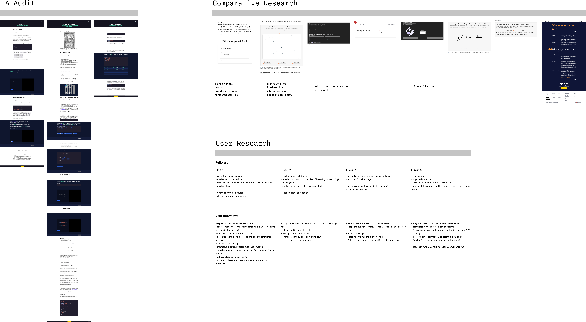
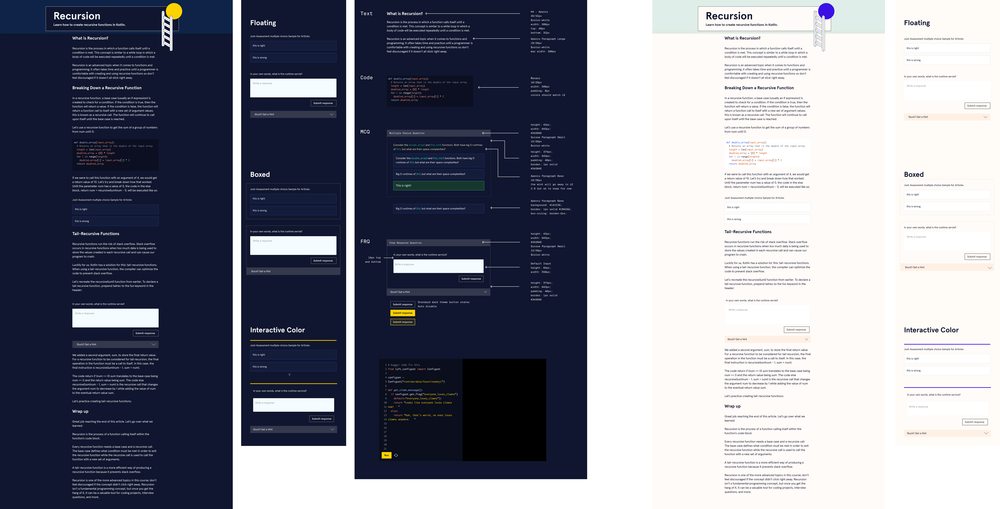

Reinventing
Interactive Articles
Codecademy is a prominent interactive learning platform aimed at democratizing access to coding education. I spearheaded a collaboration with the learner experience and content platform teams to revamp the interactive articles, expanding the range of interactible elements and enhancing both their visual appeal and usability
Product Designer
User Research
User Experience
UI Design
Interactive articles were significantly underutilized within Codecademy's learning ecosystem, necessitating a comprehensive redesign to align with the updated brand identity and to enhance the usability of embedded assessments. My goal was to transform these articles into a core, versatile component of Codecademy's educational offerings.
The redesign targeted two primary problem areas:
1. Readability and Design: Articles suffered from poor readability due to centered, long line lengths and awkward design elements. Interactive sections were marked by bulky black boxes that spanned the entire screen. The challenge was to create a more seamless and integrated experience.
2. Assessment Interactions: Embedded assessments had inconsistent and unclear interactions. Various content types, such as multiple-choice and free-response questions, were developed by different designers over the years. The goal was to unify these elements within the reading experience.
I conducted extensive user interviews with learners, curriculum developers, and content platform engineers. The research revealed a strong enthusiasm for improving article readability and a wide range of use cases for interactive articles within the curriculum.
Additionally, I analyzed other editorial experiences with interactive elements, noting that our use of space was inefficient. Many successful examples featured assessment headers, boxed interactive areas, or numbered activities, contrasting with our zebra stripe approach.
An audit of Codecademy's oldest and most unique interactive articles, conducted with curriculum developers, provided insights into the affordances and limitations for a major redesign.
Leveraging my background in publishing, I began by sketching various reading experiences, experimenting with line lengths and spacing to create a more familiar editorial style.
For interactive sections, I developed subtle yet clear signals of interactivity. Each type of embedded assessment had its unique characteristics—some included hints, multiple steps, or unique buttons. It was crucial to unify these assessments wherever technically feasible, and to suggest future refactoring for out-of-scope elements. Accessibility and readability testing for both dark and light modes was integral to every proposed change.
The redesigned articles featured more editorial line lengths and text sizes. Collaboration with engineers was key to accommodating the diverse ways curriculum developers had used assessments over the years. The dark mode design was prioritized, with light mode design adjustments waiting in the wings.
This redesign was aligned with Codecademy's new design language, ensuring seamless integration with the primary learning environment.
The redesign led to a 40% increase in average read times, indicating higher engagement levels. User testing and feedback indicated improved comprehension and retention, with learners reporting a more intuitive and enjoyable reading experience.
This project underscored the importance of cross-functional collaboration. Engineers like Ian Munro, with deep knowledge of the interactive articles' history, were instrumental in shaping the final designs. The integration of engineering and curriculum insights resulted in a seamless and effective learning experience.
Looking ahead, there are additional UI enhancements I'd like to explore. Nonetheless, this project marks a significant milestone in Codecademy's evolution, and I am proud to have led the first major refactor of the interactive articles experience to align with our new brand identity.